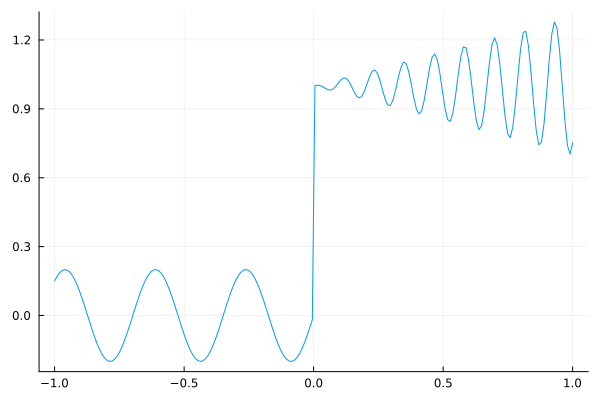
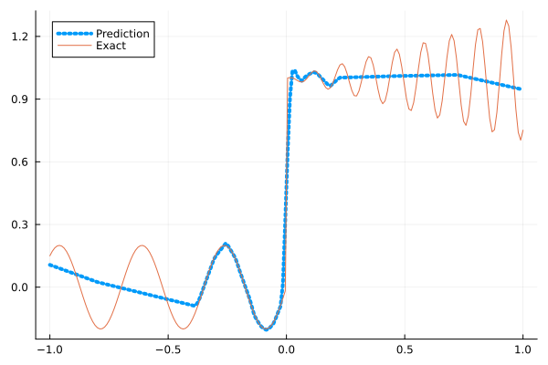
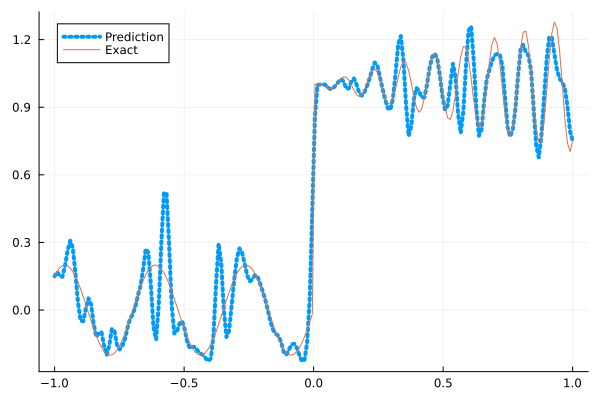
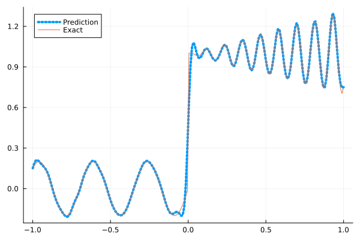
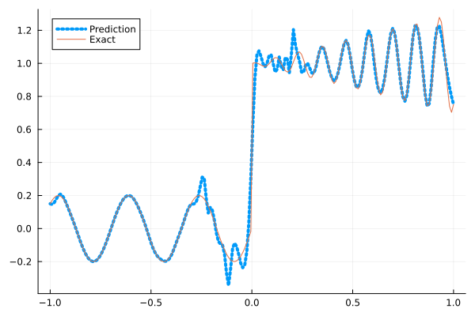
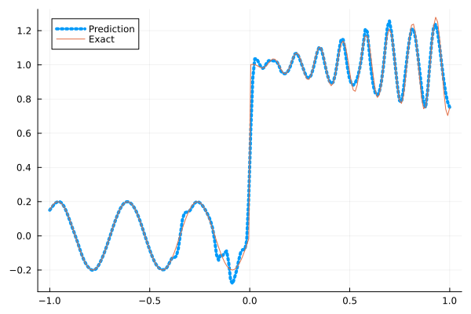

Fitting a nonlinear discontinuous function
This example is taken from here. However, we do not use adaptive activation functions. Instead, we show that using suitable non-parametric activation functions immediately performs better.
Consider the following discontinuous function with discontinuity at $x=0$:
\[u(x)= \begin{cases}0.2 \sin (18 x) & \text { if } x \leq 0 \\ 1+0.3 x \cos (54 x) & \text { otherwise }\end{cases}\]
The domain is $[-1,1]$. The number of training points used is 50.
Import pacakges
using Lux, Sophon
using NNlib, Optimisers, Plots, Random, StatsBase, ZygoteDataset
function u(x)
if x <= 0
return 0.2 * sin(18 * x)
else
return 1 + 0.3 * x * cos(54 * x)
end
end
function generate_data(n=50)
x = reshape(collect(range(-1.0f0, 1.0f0, n)), (1, n))
y = u.(x)
return (x, y)
endgenerate_data (generic function with 2 methods)Let's visualize the data.
x_train, y_train = generate_data(50)
x_test, y_test = generate_data(200)
Plots.plot(vec(x_test), vec(y_test),label=false)
Naive Neural Nets
First we demonstrate show naive fully connected neural nets could be really bad at fitting this function.
model = FullyConnected((1,50,50,50,50,1), relu)Chain(
layer_1 = Dense(1 => 50, relu), # 100 parameters
layer_2 = Dense(50 => 50, relu), # 2_550 parameters
layer_3 = Dense(50 => 50, relu), # 2_550 parameters
layer_4 = Dense(50 => 50, relu), # 2_550 parameters
layer_5 = Dense(50 => 1), # 51 parameters
) # Total: 7_801 parameters,
# plus 0 states, summarysize 80 bytes.Train the model
function train(model, x, y)
ps, st = Lux.setup(Random.default_rng(), model)
opt = Adam()
st_opt = Optimisers.setup(opt,ps)
function loss(model, ps, st, x, y)
y_pred, _ = model(x, ps, st)
mes = mean(abs2, y_pred .- y)
return mes
end
for i in 1:2000
gs = gradient(p->loss(model,p,st,x,y), ps)[1]
st_opt, ps = Optimisers.update(st_opt, ps, gs)
if i % 100 == 1 || i == 2000
println("Epoch $i || ", loss(model,ps,st,x,y))
end
end
return ps, st
endtrain (generic function with 1 method)Plot the result
@time ps, st = train(model, x_train, y_train)
y_pred = model(x_test,ps,st)[1]
Plots.plot(vec(x_test), vec(y_pred),label="Prediction",line = (:dot, 4))
Plots.plot!(vec(x_test), vec(y_test),label="Exact",legend=:topleft)Epoch 1 || 0.3653998439133762
Epoch 101 || 0.017487370082096745
Epoch 201 || 0.016286381355250484
Epoch 301 || 0.01596252636621537
Epoch 401 || 0.015835235838898717
Epoch 501 || 0.015785302783930484
Epoch 601 || 0.01575704603011427
Epoch 701 || 0.01573269307573444
Epoch 801 || 0.015620032468739092
Epoch 901 || 0.015360670345049043
Epoch 1001 || 0.015031692825507561
Epoch 1101 || 0.014188854523485324
Epoch 1201 || 0.01385772102988509
Epoch 1301 || 0.013275376548976781
Epoch 1401 || 0.013129280394745799
Epoch 1501 || 0.01309474890653465
Epoch 1601 || 0.013070644457805489
Epoch 1701 || 0.01304364289371483
Epoch 1801 || 0.013048053378094277
Epoch 1901 || 0.013032583142928385
Epoch 2000 || 0.012926903607767997
10.227368 seconds (17.90 M allocations: 1.648 GiB, 2.90% gc time, 93.83% compilation time)
Siren
We use four hidden layers with 50 neurons in each.
model = Siren(1,50,50,50,50,1; omega = 30f0)Chain(
layer_1 = Dense(1 => 50, sin), # 100 parameters
layer_2 = Dense(50 => 50, sin), # 2_550 parameters
layer_3 = Dense(50 => 50, sin), # 2_550 parameters
layer_4 = Dense(50 => 50, sin), # 2_550 parameters
layer_5 = Dense(50 => 1), # 51 parameters
) # Total: 7_801 parameters,
# plus 0 states, summarysize 88 bytes.@time ps, st = train(model, x_train, y_train)
y_pred = model(x_test,ps,st)[1]
Plots.plot(vec(x_test), vec(y_pred),label="Prediction",line = (:dot, 4))
Plots.plot!(vec(x_test), vec(y_test),label="Exact",legend=:topleft)Epoch 1 || 1.2675823443410539
Epoch 101 || 0.001838018958708601
Epoch 201 || 5.924748481414276e-5
Epoch 301 || 1.70763505158384e-6
Epoch 401 || 8.201879569139546e-8
Epoch 501 || 5.85535407588346e-9
Epoch 601 || 3.5102829491953795e-10
Epoch 701 || 1.7774527894754282e-11
Epoch 801 || 1.4508190067049955e-12
Epoch 901 || 2.8020511559987796e-13
Epoch 1001 || 1.1893618619510437e-13
Epoch 1101 || 6.048660988412172e-14
Epoch 1201 || 2.7102790986053528e-14
Epoch 1301 || 2.8671478594163576e-14
Epoch 1401 || 5.608606279125717e-14
Epoch 1501 || 4.788982731389644e-14
Epoch 1601 || 7.075105307946005e-14
Epoch 1701 || 1.4941048480397325e-14
Epoch 1801 || 2.698044987984817e-14
Epoch 1901 || 4.375210034000305e-14
Epoch 2000 || 8.023299637903115e-14
3.940271 seconds (5.91 M allocations: 1.183 GiB, 3.33% gc time, 78.06% compilation time)
As we can see the model overfits the data, and the high frequencies cannot be optimized away. We need to tunning the hyperparameter omega
model = Siren(1,50,50,50,50,1; omega = 10f0)Chain(
layer_1 = Dense(1 => 50, sin), # 100 parameters
layer_2 = Dense(50 => 50, sin), # 2_550 parameters
layer_3 = Dense(50 => 50, sin), # 2_550 parameters
layer_4 = Dense(50 => 50, sin), # 2_550 parameters
layer_5 = Dense(50 => 1), # 51 parameters
) # Total: 7_801 parameters,
# plus 0 states, summarysize 88 bytes.@time ps, st = train(model, x_train, y_train)
y_pred = model(x_test,ps,st)[1]
Plots.plot(vec(x_test), vec(y_pred),label="Prediction",line = (:dot, 4))
Plots.plot!(vec(x_test), vec(y_test),label="Exact",legend=:topleft)Epoch 1 || 0.34888334874403043
Epoch 101 || 0.006319996712503844
Epoch 201 || 0.0040373331547752835
Epoch 301 || 0.0024332211537817796
Epoch 401 || 0.0015936099749704414
Epoch 501 || 0.0008189313624213492
Epoch 601 || 0.00034832620088831145
Epoch 701 || 0.00017006442157081107
Epoch 801 || 9.991302181435802e-5
Epoch 901 || 5.428322720171148e-5
Epoch 1001 || 0.00014674293023503524
Epoch 1101 || 2.2801942079102006e-5
Epoch 1201 || 1.651429573700464e-5
Epoch 1301 || 1.2897628975848913e-5
Epoch 1401 || 1.0183241906037057e-5
Epoch 1501 || 8.320055724617232e-6
Epoch 1601 || 1.0015392495799008e-5
Epoch 1701 || 6.016460981939202e-6
Epoch 1801 || 5.176243530415895e-6
Epoch 1901 || 4.8141555022316594e-6
Epoch 2000 || 8.232858102471343e-6
0.734186 seconds (1.15 M allocations: 891.403 MiB, 6.80% gc time)
Gaussian activation function
We can also try using a fully connected net with the gaussian activation function.
model = FullyConnected((1,50,50,50,50,1), gaussian)Chain(
layer_1 = Dense(1 => 50, gaussian), # 100 parameters
layer_2 = Dense(50 => 50, gaussian), # 2_550 parameters
layer_3 = Dense(50 => 50, gaussian), # 2_550 parameters
layer_4 = Dense(50 => 50, gaussian), # 2_550 parameters
layer_5 = Dense(50 => 1), # 51 parameters
) # Total: 7_801 parameters,
# plus 0 states, summarysize 80 bytes.@time ps, st = train(model, x_train, y_train)
y_pred = model(x_test,ps,st)[1]
Plots.plot(vec(x_test), vec(y_pred),label="Prediction",line = (:dot, 4))
Plots.plot!(vec(x_test), vec(y_test),label="Exact",legend=:topleft)Epoch 1 || 0.2974637209037418
Epoch 101 || 0.006236895325943892
Epoch 201 || 0.005634216092364002
Epoch 301 || 0.004411547857013396
Epoch 401 || 0.001333678105548891
Epoch 501 || 0.0001274050253714183
Epoch 601 || 3.0131787974472646e-6
Epoch 701 || 8.20749103736245e-6
Epoch 801 || 1.7895827606865883e-6
Epoch 901 || 1.1156705801645552e-6
Epoch 1001 || 1.1213370193490456e-6
Epoch 1101 || 1.1180946761612277e-6
Epoch 1201 || 1.7256374889230254e-7
Epoch 1301 || 1.2415582079952715e-5
Epoch 1401 || 0.00010557065978661561
Epoch 1501 || 5.475761716267401e-8
Epoch 1601 || 7.598844650497903e-5
Epoch 1701 || 3.2718722776490194e-7
Epoch 1801 || 3.634471533002117e-9
Epoch 1901 || 6.242777964875951e-10
Epoch 2000 || 4.864575419501373e-10
4.321113 seconds (8.33 M allocations: 1.294 GiB, 4.03% gc time, 82.25% compilation time)
Quadratic activation function
quadratic is much cheaper to compute compared to the Gaussain activation function.
model = FullyConnected((1,50,50,50,50,1), quadratic)Chain(
layer_1 = Dense(1 => 50, quadratic), # 100 parameters
layer_2 = Dense(50 => 50, quadratic), # 2_550 parameters
layer_3 = Dense(50 => 50, quadratic), # 2_550 parameters
layer_4 = Dense(50 => 50, quadratic), # 2_550 parameters
layer_5 = Dense(50 => 1), # 51 parameters
) # Total: 7_801 parameters,
# plus 0 states, summarysize 80 bytes.@time ps, st = train(model, x_train, y_train)
y_pred = model(x_test,ps,st)[1]
Plots.plot(vec(x_test), vec(y_pred),label="Prediction",line = (:dot, 4))
Plots.plot!(vec(x_test), vec(y_test),label="Exact",legend=:topleft)Epoch 1 || 0.44873447758716767
Epoch 101 || 0.006042136330682612
Epoch 201 || 0.005474175999353537
Epoch 301 || 0.004708178964923837
Epoch 401 || 0.0036009615801137398
Epoch 501 || 0.0024769394244438196
Epoch 601 || 0.0014106056105444664
Epoch 701 || 0.000483273935369318
Epoch 801 || 0.00011535451664232601
Epoch 901 || 3.3823085482521016e-5
Epoch 1001 || 5.098489713679938e-6
Epoch 1101 || 4.7500562693660946e-6
Epoch 1201 || 4.935686559089358e-7
Epoch 1301 || 0.00010274946318241182
Epoch 1401 || 3.068873029123928e-7
Epoch 1501 || 1.3253447704256904e-7
Epoch 1601 || 1.8452186760147317e-5
Epoch 1701 || 1.326736320130802e-7
Epoch 1801 || 1.4810432823389037e-7
Epoch 1901 || 2.3010092969009694e-6
Epoch 2000 || 7.15648289726964e-8
3.360506 seconds (5.27 M allocations: 1.150 GiB, 3.47% gc time, 84.09% compilation time)
Conclusion
"Neural networks suppresse high frequency components" is a misinterpretation of the spectral bias. The accurate way of putting it is that the lower frequencies in the error are optimized first in the optimization process. This can be seen in Siren's example of overfitting data, where you do not have implicit regularization. The high frequency in the network will never go away because it has fitted the data perfectly.
Mainstream attributes the phenomenon that neural networks "suppress" high frequencies to gradient descent. This is not the whole picture. Initialization also plays an important role. Siren mitigats this problem by initializing larger weights in the first layer, while activation functions such as gassian have large enough gradients and sufficiently large support of the second derivative with proper hyperparameters. Please refer to Vincent Sitzmann, Julien Martel, Alexander Bergman, David Lindell, Gordon Wetzstein (2020), Sameera Ramasinghe, Simon Lucey (2021) and Sameera Ramasinghe, Lachlan MacDonald, Simon Lucey (2022) if you want to dive deeper into this.